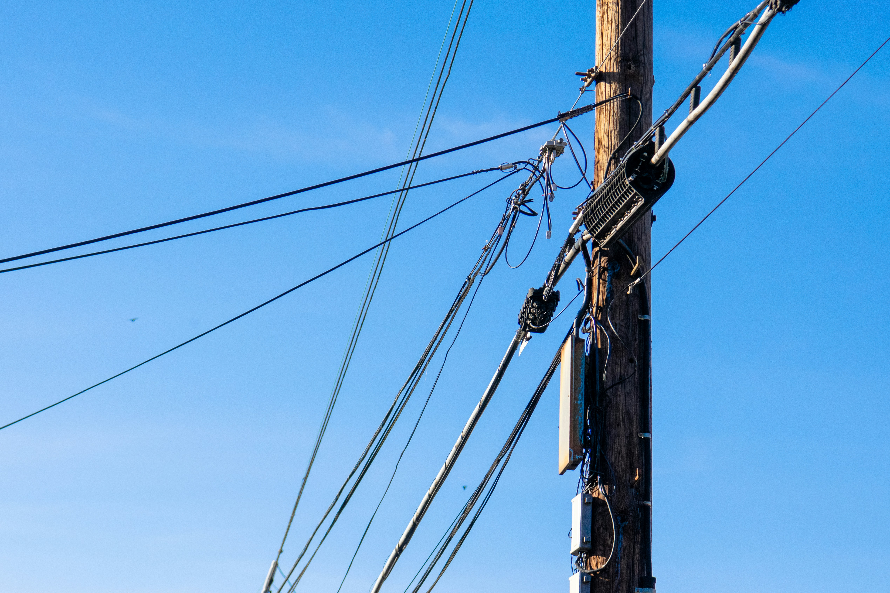

Business
사업영역

사업 영역 세분화
손해사정이란?
복잡한 사고일수록 정확한 분석이 필요합니다. 저희는 각 분야별 전문 인력을 기반으로 전기·통신설비·특수차량·기계장비·대물배상 등 고난도 분야에 대한 전문 손해사정 서비스를 제공합니다. 보험사는 보다 공정하고 정확한 판단을 내릴 수 있고, 고객은 빠르고 투명한 보상 절차를 경험하게 됩니다.
광케이블, 고압전선, 주차시스템, 건축물, 농기계, 튜닝카, 식물, 특수차량, 특수대물 사고, 영업손실 과다 요구건, 적재물 사고건 등 발생시 신속출장 피해물 확인 및 과실상계, 감가상각 적용 등 손해액 절감과 Moral 사고 적발 및 악성민원건 처리 등 의뢰사 만족을 목표로 손해사정업무를 하고 있습니다.
복잡한 사고일수록 정확한 분석이 필요합니다. 저희는 각 분야별 전문 인력을 기반으로 전기·통신설비·특수차량·기계장비·대물배상 등 고난도 분야에 대한 전문 손해사정 서비스를 제공합니다. 보험사는 보다 공정하고 정확한 판단을 내릴 수 있고, 고객은 빠르고 투명한 보상 절차를 경험하게 됩니다.
광케이블, 고압전선, 주차시스템, 건축물, 농기계, 튜닝카, 식물, 특수차량, 특수대물 사고, 영업손실 과다 요구건, 적재물 사고건 등 발생시 신속출장 피해물 확인 및 과실상계, 감가상각 적용 등 손해액 절감과 Moral 사고 적발 및 악성민원건 처리 등 의뢰사 만족을 목표로 손해사정업무를 하고 있습니다.



보험사 위임
보험사로 부터 위임을 받습니다.→
본사 접수
보험사 사고 접수지를 참고하여 접수합니다.→
조사관 배정
지역 및 사고 유형에 맞는 조사관을 배정합니다.→
현장 조사
해당 사고 당사자와 미리 연락하여 현장 답사를 실시합니다.→
중간 보고
중간보고 및 손해액 평가를 진행합니다.→
종결 보고
손해액 평가 후, 최종적으로 종결 보고를 합니다.→
종결
종결 보고 후, 보험사 결재가 진행되면 최종 종결처리 합니다.처리 분야 안내
| 구분 | 특화 분야 | 세부 처리 분야 |
|---|---|---|
| 전기 / 전자 |
국가/국영/민간업체 전력설비 / 교통신호기 |
한국전력공사 관련 사고 일체 교통신호제어기(경찰청·국토교통부·철도공사·도로공사) 배전함 / 기타 전기·전자 관련 피해물 사정 및 감정 평가 |
| 통신설비 |
국가/국영/민간 업체 통신설비 |
KT/SK/LGU+/드림라인 등 통신 업체/군 통신시설 광통신케이블/케이블방송설비/정보통신 시설물 기타 통신설비 관련 피해물 사정 및 감정 평가 |
| 특수차량 건설기계 |
특수차량 / 스카니아 덤프 트랙터 / 콤바인 / 크레인 건설기계 |
외제차량/건설기계/특수차량/스카니아덤프/렉카차/윈치/캠핑카/ 농업기계/트랙터/콤바인/산업용차량/아스팔트차량/ 모터보트/대형트럭/수입차전기/트레일러/크레인/방송차량 |
| 기계장비 |
배관·소방설비·하이패스기 충격흡수기 / 신호기 / 계측장비 소방설비 / CCTV |
배관설비/하이패스기/세차기/주차차단기/컴퓨터/의료기기/주유기/ CCTV/주차타워/충격흡수기/소방설비/신호기/계측기/카오디오/ 선반/각종 전자물품 |
| 1종/3종 대물 배상 사고 및 기타 |
도로 충격흡수 안전시설 1종 배상책임/재물보험 건축물/도로설비 각종 특수 피해물 |
재물보험/일상생활배상/영업배상/시설소유자배상/음식물배상/ 영조물배상/누수사고/홍수사고/전자제품배상/주차장배상/ 체육시설업자배상/생산물배상/건축물/도로설비/화재손해/ 농산물/헬리콥터/악기류/석물/동물 및 식물/예술품/환경오염/ 가스사고/골프채/업손실/기타 특수 피해물 일체 |